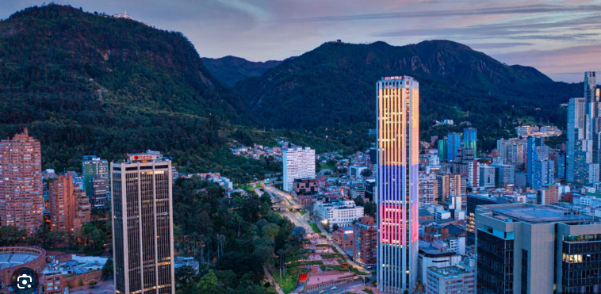

<!DOCTYPE html>
<html lang="en">
<head>
    <meta charset="UTF-8">
    <meta name="viewport" content="width=device-width, initial-scale=1.0">
    <title>SOLUCIONES</title>
    <link rel="stylesheet" href="estilos4.css">
</head>
</body>
</html>
<body>
    <header>
        <nav>
            <a href="index.html">Inicio</a>
            <a href="comunidad.html">Comunidad</a>
            <a href="soluciones.html">Soluciones</a>
            <a href="compuestos.html">Compuestos organicos</a>
            <a href="Preguntas.html">Preguntas</a>
            <nav>
                <section class="textos-header">
                    <h1> SOLUCIONES A LAS PROBLEMATICAS GENERADAS EN NUESTRO ENTORNO
                    </h1>
                    <h2>Desde la carrera de Finanzas y Negocios Internacionales</h2>
            </section>
            <!-- Generated by https://smooth.ie/blogs/news/svg-wavey-transitions-between-sections -->
            <div class= "wave" style="height: 150px; overflow: hidden;" ><svg viewBox="0 0 500 150" preserveAspectRatio="none" style="height: 100%; width: 100%;"><path d="M-1.41,87.34 C220.37,149.52 349.20,-49.98 500.84,92.28 L500.00,150.00 L0.00,150.00 Z" style="stroke: none; fill: rgb(255, 255, 255);"></path></svg></div>
         </header>
         <main>
                        <section class="contenedor sobre-nosotros">
                            <h2 class="titulo">SOLUCIONES A LO QUE NO ESTA FUNCIONANDO EN NUESTRO ENTORNO</h2>
                            <div class="contenedor-sobre-nosotros">
                                <div class="contenido-textos">
     <head>
        <body>
             <ul>
                <li>Transporte público inseguro y congestionado:
                    <ul>
                        <li>Realizar análisis de inversión y financiamiento para mejorar la infraestructura del transporte público. Esto podría incluir la búsqueda de financiamiento internacional para proyectos de modernización del sistema, la implementación de tecnología de monitoreo de seguridad y la optimización de rutas y horarios mediante el análisis de datos. Además, desarrollar modelos financieros para atraer inversiones privadas en el sistema de transporte público.</li>
                    </ul>
                </li>
                
                <li>Infraestructura ciclista insuficiente y peligrosa:
                    <ul>
                        <li>Elaborar un plan estratégico de inversión para mejorar la infraestructura ciclista, utilizando fondos tanto públicos como privados. Buscar alianzas con organizaciones internacionales y ONG para obtener financiamiento y asistencia técnica. Implementar proyectos de responsabilidad social empresarial (RSE) con empresas locales e internacionales para financiar la construcción y el mantenimiento de ciclovías.</li>
                    </ul>
                </li>
                
                <li>Contaminación del aire
                    <ul>
                        <li>Desarrollar proyectos de inversión en tecnologías limpias y energías renovables, financiados a través de bonos verdes y fondos internacionales. Promover políticas de incentivos fiscales para empresas que adopten prácticas sostenibles. Implementar sistemas de compensación de carbono para empresas que contribuyan a reducir sus emisiones, utilizando herramientas financieras para medir y gestionar estos esfuerzos.</li>
                    </ul>
                </li>
                
                <li>Gestión ineficiente del agua:
                    <ul>
                        <li>Crear modelos financieros para optimizar la gestión del agua, incluyendo la inversión en infraestructura para la recolección de agua de lluvia y el tratamiento de aguas residuales. Buscar financiamiento internacional para proyectos de conservación del agua y mejorar la eficiencia de su uso. Implementar programas de financiamiento para incentivar a las empresas y hogares a adoptar tecnologías de ahorro de agua.</li>
                    </ul>
                </li>
                
                <li>Basura y mantenimiento de espacios públicos:
                    <ul>
                        <li>Desarrollar un sistema de financiamiento para mejorar la gestión de residuos y el mantenimiento de espacios públicos. Implementar programas de reciclaje financiados mediante asociaciones público-privadas. Buscar inversión internacional para proyectos de infraestructura de residuos sólidos. Proponer incentivos financieros para empresas que participen en programas de limpieza y mantenimiento de la ciudad.</li>
                    </ul>
                </li>
                
            </div>
        </section>
        </main>
        <footer>
        <div class="contenedor-footer">
        <div class="content-foo">
        <h4>Curso</h4>
        <p>1102</p>
        </div>
        <div class="content-foo">
        <h4>Email</h4>
        <p>andrea.rincon@educacionbogota.edu.co</p>
        </div>
        <div class="content-foo">
        <h4>Location</h4>
        <p>Colegio Saludcoop </p>
        </div>
        </div>
        <h2 class="titulo-final">&copy; Andrea Rincon Ortiz </h2>
        </footer>
        </body>